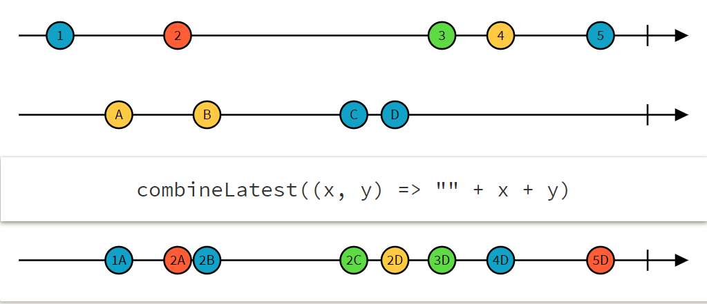

Angular
... lesson learned

Pitfall #1
2 requests have been sent!
The router subscribes to check if the route can be activated
A developer subscribes to redirect to a dialog
export class AuthGuardService implements CanActivate {
constructor(private router: Router, private fooService: FooService) {}
canActivate(route?: ActivatedRouteSnapshot,
state?: RouterStateSnapshot): Observable< boolean> {
const response = this.fooService.checkFoo();
response.subscribe(val => {
if (!val) {
this.router.navigate([...]);
}
});
return response;
}}
solution #1
Don't make nested subscriptions
Use functional operators
canActivate(route?: ActivatedRouteSnapshot, state?: RouterStateSnapshot): Observable< boolean> {
return this.fooService.checkFoo()
.do(val => {
if (!val) {
this.router.navigate([...]);
}
});
}
pitfall #2
avoid memory leaks
Consider we have a stream...
If we subscribe to this stream, a subscription will be created
so...
... where is the memory leak?
A subscription will exist unless the stream is completed or we unsubscribe from the stream.
const interval$ = interval(1000);
const subscription = interval$.subscribe(val => console.log(val));
Even if a component gets destroyed, the stream will keep producing values!
solution #2
1. use takeUntil operator
2. collect all subscriptions and unsubscribe manually
3. use async pipe
1. takeUntil
private destroy$: Subject< void> = new Subject< void>();
ngOnInit() {
this.userService.getUser(id)
.pipe(takeUntil(this.destroy$))
.subscribe(user => this.user = user);
}
ngOnDestroy(): void {
this.destroy$.next();
this.destroy$.unsubscribe();
}
2. Manually unsubscribe
private subscriptions: [] = [];
ngOnInit() {
const subscription =
this.userService.getUser(id).subscribe(user => this.user = user);
this.subscriptions.push(subscription);
}
ngOnDestroy(): void {
this.subscriptions.forEach(sub => sub.unsubscribe());
}
3. Use async pipe
1. Unsubscribe is automatically when the component gets destroyed
2. Subscription & change detection is triggered automatically
hot
vs.
cold
observables
- cold: observables create a new producer is created each time a consumer subscribes to them
- hot: observables share a single producer with every consumer that subscribes to them
- each observable is cold by default
Pitfall #3
multiple http requests!
The xhr call will be triggered twice
numberOfBooks$ depends on books$!
Pitfall #3
multiple http requests!
Suppose we use async pipe and want to handle some errors...
solution #3
use publish & share operators!
to share your subscriptions
ngOnInit() {
this.books$ = this.bookService.loadBooks().publishLast().refCount();
this.books$ = this.bookService.loadBooks().pipe(share());
}
publishLast shares the last emitted value - only if the stream completes
publishReplay(1) shares the latest emitted value, which is done after any emission
refCount returns an observable that maintains a reference count of subscribers
pitfall #4
don't pass streams to services!
this.books$ = this.bookService.loadBooks();
filteredBooks$ = this.bookService.filterBooks(this.books$);
We don't know what's gonna happen to this stream!
May be subscribed to?
Combined with another stream?
solution #4
use switch map!
this.books$ = this.bookService.loadBooks();
filteredBooks$ =
this.books$.pipe(switchMap(books => this.bookService.filterBooks(books)));
&
#1 combine Latest
When any observable emits a value, emit the latest value from each.
#2 rxjs pipe
available with rxjs 5.5+
What are pipes?
Those operators are pure functions
They can be used as standalone operators instead of methods on an observable
They're lightweight
Can decrease build size
They make code reusable
#2 rxjs pipe
import { range } from 'rxjs/observable/range';
import { map, filter } from 'rxjs/operators'; // import changed!
const source$ = range(0, 10);
source$.pipe(
filter(x => x % 2 === 0),
map(x => x + x)
)
.subscribe(x => console.log)
pure functions
accept an observable and return an observable
are tree-shakable by webpack or other bundlers
linters can identify that the functions are declared/imported but not used
Tree-shaking is the process of dead code elimination

#3 if... else
Loading...
#4 The Two Ways to Grab Route Parameters
We can grab route parameters using:
export const bookDetailsRoute: Route = {
path: 'book/:id',
component: BookDetailsComponent,
} - The Snapshot Way
- The Observable/Stream Way
The Snapshot Way
We can grab route parameters using:
constructor(private route: ActivatedRoute) {}
ngOnInit() {
// this is where we'll grab the data
// grab them using the snapshot method
const id = +this.route.snapshot.params['id'];
}
This will be enough to grab the id, but...
... keep in mind that Angular reuses components to improve performance.
so what ?
The Snapshot Way
If we pick another book on this side:
The component wouldn't update!
Keep in mind that:
- The snapshot method runs only ones when the component is initiated
- If you plan reusing the component, use the observable way
The Observable Way
Observables are the stream of data
The Observable will pass along the new data as it changes!
ngOnInit() {
// subscribe to the parameters observable
this.route.paramMap.subscribe(params => {
const id = +params.get('id');
});
}
Please use:
- paramMap if you work with Angular 4+
- params if you work with Angular v2
#5 bonus
What MAY be wrong with this code?
if (book.id) {
updateBook(book);
} else {
saveBook(book);
}
Q & A